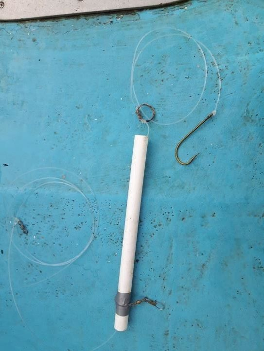
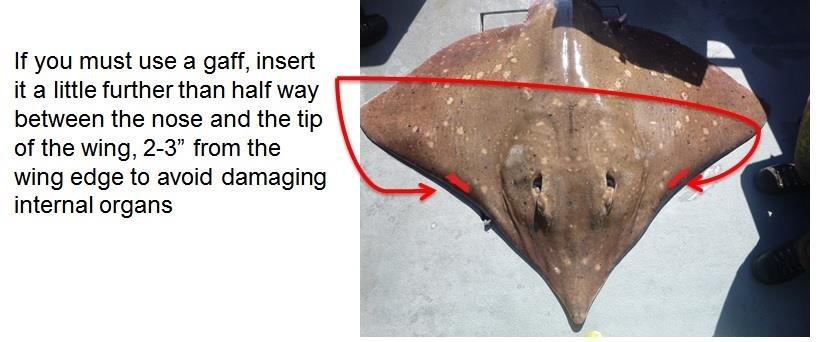

SNH Skate Handling Best Practice Guide.
This Guide has been written with the help of experienced skippers and anglers fishing in the Loch Sunart to the Sound of Jura Marine Protected Area (MPA) for skate. The aim of this Guide is to pass on advice on how best to handle skate when angling to maintain them in the best possible condition rather than how to fish for skate.
In order for recreational angling for skate to continue in the MPA and Scotland wide, it is imperative that a high standard of practise is followed. Skate have a high recapture rate when handled using the methods outlined below, suggesting it causes minimal impact to the fish. If you have never fished for skate before, we recommend you fish with an experienced skipper in order to learn the best ways to catch a skate and look after it when you do.
Ensure your rod and reel are strong enough for the job, breakages are expensive and can leave hooks and lines attached to skate.
The correct terminal tackle is essential to minimise the chance of deep hooking and to allow the skate to escape with just a hook attached (and not the weight) if your line snaps. 250lb breaking strain monofilament is recommended for terminal tackle. Hook links should be no greater than 24 inches. This should be crimped to a good quality 200lb rated swivel. Do not use wire. The hook length should be attached to an 8' (2.4m) rubbing leader with a suitable running boom.
A single, barbless 10/0 bronze hook is recommended, a 12/0 is also acceptable. Never use stainless or tinned hooks. It is essential that hooks are barbless, remove the barb with a file or crush down the barb in a vice.
Very large baits are unnecessary and increase the risk of deep hooking. A single fish with a single hook inserted through the head is sufficient.
Wind down onto the skate as soon as you notice a bite and be vigilant for light takes.
If you do not have a door to deck level on your boat we recommend that you do not bring skate on board over the gunwale. If you must bring the skate on board, lower it gently to the deck.
Try to avoid gaffing if possible; small fish should not need to be gaffed. If you must use a gaff we recommend stainless steel (avoid using rusty gaffs). The gape of the gaff should not exceed 2 inches and it should be inserted from the underside of the skate about half way between the nose and the tip of the wing, 2-3” from the edge of the wing (see diagram below). Never gaff in the trailing edge of the wing.
When removed from the water, the skate must be completely supported on a flat surface the entire time it is in the boat. Do not pick the fish up or bend it for photographs. Do not touch the eyes or the spiracles (the holes behind the eye which lead to the gills) you risk blinding the fish or damaging the gills by doing this.
Make every effort to remove the hook from the skate. Have long nosed pliers or side cutters available to cut the hook if necessary. If the skate is deep hooked and you cannot remove it, cut the line as close to the hook as possible.
Try to release the skate as quickly as possible, 5 minutes maximum and less on hot sunny days. Where possible (smaller fish), release it by lifting by the cheeks. Larger fish may require an aid to move. The preferred method is to lay a large piece (about 1m x 1m) of tarpaulin, netting or board on the deck and lay the fish on this as it comes on board, you can then use this to lift the fish when you are ready to release. Try not to let the fish splash into the water from a height, rather lower it gently into the water.
Please submit any photos you take of skate to Skatespotter, advice on how to take a good photo of a skate for matching the spot patterns can be found here.